spring框架的概述以及spring中基于XML的IOC配置
Spring的概述
Spring是分层的 Java SE/EE应用 full-stack 轻量级开源框架，以 IoC（Inverse Of Control： 反转控制）和 AOP（Aspect Oriented Programming：面向切面编程）为内核，提供了展现层 Spring MVC 和持久层 Spring JDBC 以及业务层事务管理等众多的企业级应用技术，还能整合开源世界众多 著名的第三方框架和类库，逐渐成为使用最多的Java EE 企业应用开源框架
Spring的发展历程
1997 年 IBM提出了EJB 的思想
1998 年，SUN制定开发标准规范 EJB1.0
1999 年，EJB1.1 发布
2001 年，EJB2.0 发布
2003 年，EJB2.1 发布
2006 年，EJB3.0 发布
Rod Johnson（spring之父）
Expert One-to-One J2EE Design and Development(2002)
阐述了 J2EE 使用EJB 开发设计的优点及解决方案 Expert One-to-One J2EE Development without EJB(2004)
阐述了 J2EE 开发不使用 EJB的解决方式（Spring 雏形）
2017 年 9 月份发布了 spring 的最新版本 spring 5.0 通用版（GA）
Spring的优势
方便解耦，简化开发
通过spring提供的Ioc容器，可以将对象间的依赖关系交由Spring进行控制，避免硬编码所造成的过渡程序耦合。用户也不必再为单例模式类、属性文件解析等这些很底层的需求编写代码。可以更专注与上层的应用。
AOP编程的支持
通过Spring的AOP功能，方便进行面向切面的编程，许多不容易用传统OOP实现的功能可以通过AOP轻松应付。
声明式事务的支持
可以将我们从单调烦闷的事物管理代码中解脱出来，通过声明式方式灵活的进行事务的管理，提高开发效率和质量。
方便程序的测试
可以用非容器依赖的编程方式进行几乎所有的测试工作，测试不再是昂贵的操作，而是随手可 做的事情。
方便集成各种优秀框架
Spring可以降低各种框架的使用难度，提供了对各种优秀框架（Struts、Hibernate、Hessian、Quartz 等）的直接支持。
降低 JavaEE API的使用难度
Spring对 JavaEE API（如 JDBC、JavaMail、远程调用等）进行了薄薄的封装层，使这些 API 的 使用难度大为降低。
Java源码是经典学习范例
Spring的源代码设计精妙、结构清晰、匠心独用，处处体现着大师对Java 设计模式灵活运用以 及对 Java技术的高深造诣。它的源代码无意是 Java 技术的最佳实践的范例。
Spring的体系结构
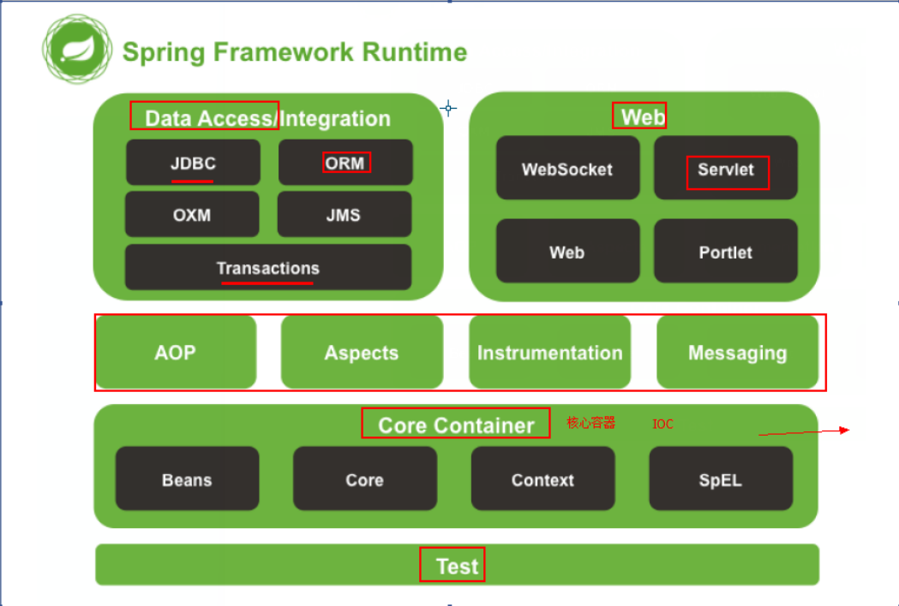
编写jdbc的工程代码用于分析程序的耦合
1 | public static void main(String[] args) throws SQLException { |
编译器依赖
如果把mysql的相关jar包依赖给删除，那么程序就会直接报错，这错误出现在编译时期，必须立即修改才能使用。
程序的耦合和解耦的思路分析
程序间的依赖关系
包括：
类之间的依赖
方法间的依赖
解耦：
降低程序间的依赖关系
实际开发中：
应该做到：编译器不依赖，运行时才依赖
解耦的思路：
- 使用反射来创建对象，而避免使用new关键字
- 通过读取配置文件来获取创建的对象全限定类名
曾经代码中的问题分析
当我们表现层调用业务层时，需要使用new关键字创建业务层实体类调取相应的方法，然后再使用new关键字调用持久层实体类相应的方法以返回相应的数据到表现层。这样就形成了很强的耦合性
编写工厂类和配置文件
Bean:在计算机英语中，有可重用组件的含义。
JavaBean：用java语言编写的可重用组件。
javabean > 实体类
他就是我们的service和dao对象。
- 需要创建一个配置文件来配置我们service和dao
- 通过读取配置文件中的配置的内容，反射创建对象
配置文件可以使xml也可以是properties
工厂模式解耦
- 将各个接口实现类通过
bean.properties文件保存，需要使用时，获取相应的全限定类名，使用反射来创建实现类对象
1 | accountService = com.yu.service.impl.AccountServiceImpl |
- 创建BeanFactory工厂对象
1 | public class BeanFactory { |
- 测试
1 | /** |
1 | /** |
1 | /** |
分析工厂模式中的问题并改造
我们使用for循环打印五次IAccountService对象，发现他每次的对象都是不一样的，每次都会通过全限定类名去反射调用默认函数创建一个新的对象，这就是我们说的多例。
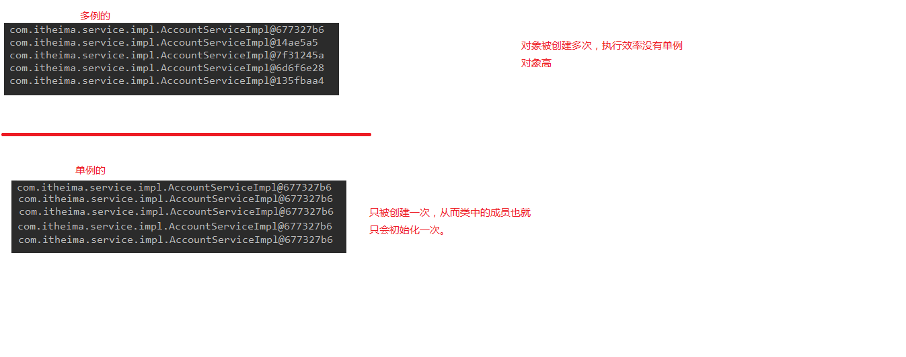
在实际开发中，我们只需要获取一个对象，那怎么改造呢？
使用单例会有多线程的问题，当多个用户修改会引发其他用户的数据。所以我们在业务层实现类中不会使用成员变量。而是在成员方法内定义成员变量。
改造BeanFactory，使用静态代码块初始化数据，将配置文件中的键值对存入到Map容器中保存，之后返回。这样不管有多少用户，都只会拿到同一个对象，因为静态代码块只会在类加载的时候加载一次，之后就不会再次加载1
2
3
4
5
6
7
8
9
10
11
12
13
14
15
16
17
18
19
20
21
22
23
24
25
26
27
28
29
30
31
32
33
34
35
36
37
38
39
40
41public class BeanFactory {
//定义一个Properties对象
private static Properties props;
//定义一个Map,用于存放我们要创建的对象。我们把他称之为容器
private static Map<String,Object> beans;
//使用静态代码块Properties对象赋值
static {
try {
//实例化对象
props = new Properties();
//获取proes文件的流对象
InputStream in = BeanFactory.class.getClassLoader().getResourceAsStream("bean.properties");
props.load(in);
//实例化容器
beans = new HashMap<String, Object>();
//取出配置文件中所有的key
Enumeration keys = props.keys();
//遍历枚举
while (keys.hasMoreElements()){
//取出每个key
String key = keys.nextElement().toString();
//根据key获取values
String beanPath = props.getProperty(key);
//反射创建对象
Object value = Class.forName(beanPath).newInstance();
//把key和value存入容器
beans.put(key,value);
}
} catch (Exception e) {
throw new ExceptionInInitializerError("初始化properties错误");
}
}
public static Object getBean(String beanName){
return beans.get(beanName);
}
}
ioc的概念和作用
控制反转(Inversion of Control，英文缩写为IoC)把创建对象的权利交给狂阶，是框架的重要特征，并非面向对象编程的专用术语。他包括依赖注入(Dependency Injection,简称DI)和依赖查找(Dependency Lookup)。
明确ioc的作用：
削减计算机程序的耦合(解除代码中的依赖关系)。
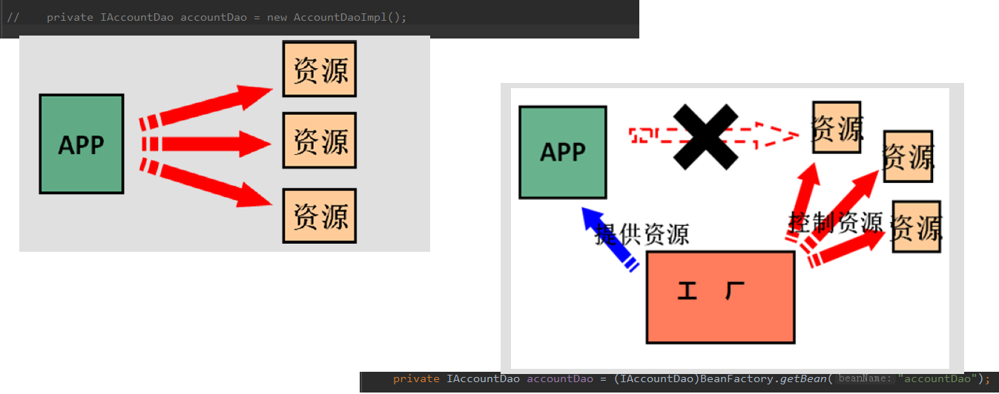
spring基于XML的IOC环境搭建和入门
- 在官网找到Core进入 找到bean的xml配置文件
- 创建bean.xml核心配置文件
1 | <?xml version="1.0" encoding="UTF-8"?> |
- test
1 | /** |
ApplicationContext的三个实现类
ApplicationContext的三个常用实现类：
- ClasspathXmlApplicationContext：它可以加载类路径下的配置文件，要求配置文件必须在类路径下。不在的话，加载不了。（更加常用）
- FileSystemXmlApplicationContext：他可以加载磁盘任意路径下的配置文件(必须有访问权限)
- AnnotationConfigApplicationContext：用于读取注解创建的容器的。
BeanFactory和ApplicationContext的区别
ApplicationContext: 单例对象适用 常采用此接口
- 它在构建核心容器时，创建对象采取的策略是采用立即加载的方式。也就是说，只要一读取完配置文件马上就创建配置文件中配置的对象。
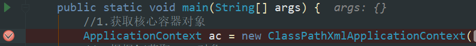
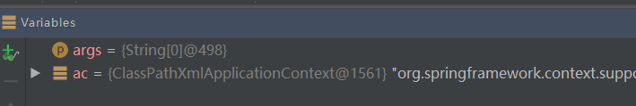
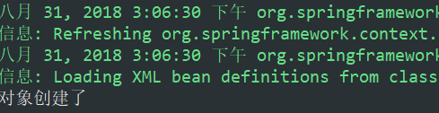
当我们走完创建核心容器对象时，对象就已经创建了
BeanFactory：多例对象适用 - 它在构建核心容器时，创建对象采取的策略是采用延迟加载的方式。也就是说，什么时候根据id获取对象了，什么时候才真正的创建对象。
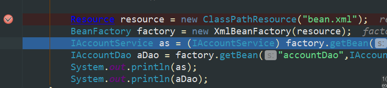
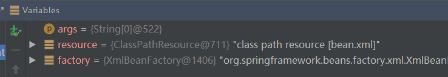
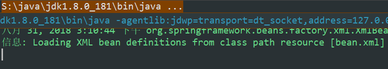
当我们走完读取配置文件，以及创建工厂对象，对象此时还没有创建。
继续往下走，相应的对象创建了
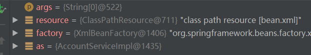
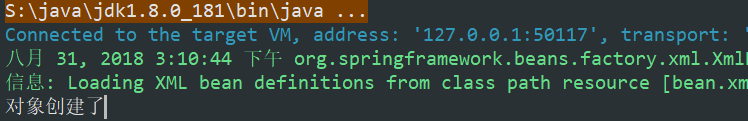
spring中的细节之三种创建Bean对象的方式
- 使用默认构造函数创建。
在spring的配置文件中使用bean标签，配以id和class属性之后，且没有其他属性和标签时。
采用的就是默认构造函数创建bean对象，此时如果类中没有默认构造函数,则对象无法创建。
1 | Failed to instantiate [com.yu.service.impl.AccountServiceImpl]: No default constructor found; |
- 使用普通工厂中的方法创建对象(使用某个类中的方法创建对象，并存入spring容器)
1 | /** |
1 | <bean id="instranceFactory" class="com.yu.factory.InstanceFactory"></bean> |
- 使用工厂中的静态方法创建对象(使用某个类中的静态方法创建对象，并存入spring容器)
1 | public class StaticFactory { |
1 | <bean id="accountService" class="com.yu.factory.StaticFactory" factory-method="getAccountService"></bean> |
spring中bean的细节之作用范围
bean标签的scope属性：
- 作用：用于指定bean的作用范围
- 取值：
singleton：单例的(default)
prototype：多例的
request：作用于web应用的请求范围
session：作用于web应用的会话范围
global-session：作用于集群环境的会话范围（全局会话范围），当不是集群环境时，他就是session
global-session的介绍：
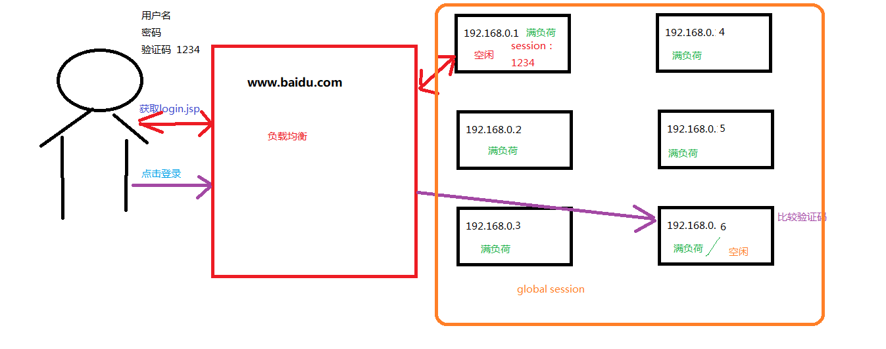
spring中bean的细节之生命周期
单例对象：
- 出生：当容器创建时对象出生
- 活着：只要容器还在，对象一直或者
- 死亡：容器销毁，对象消亡
总结：单例对象的生命周期和容器相同。
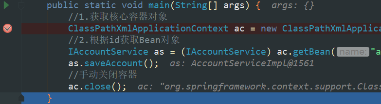
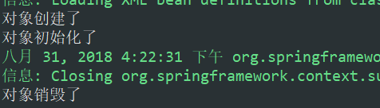
多例对象：
- 出生：当我们使用对象时spring框架为我们创建
- 活着：对象只要是在使用过程中就一直活着
- 死亡：当对象长时间不用，且没有别的对象引用时，由Java的垃圾回收器回收
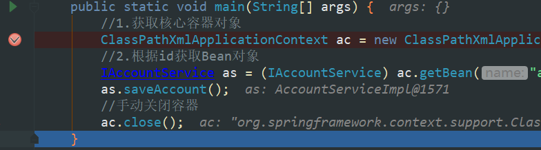
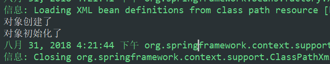
spring中依赖注入
依赖注入：
Dependency Injection
IOC的作用：降低程序间的耦合(依赖关系)
依赖关系的管理：以后都交给spring来维护
在当前类需要用到其他类的对象，由spring为我们提供，我们只需要在配置文件中说明
依赖关系的维护：就称之为依赖注入
依赖注入：能注入的数据
- 基本类型和String
- 其他bean类型(在配置文件中或者注解配置过的bean)
- 复杂类型/集合类型
注入的方式： - 使用构造函数提供
- 使用set方法提供
- 使用注解提供
构造函数的注入
使用的标签：Constructor-arg
标签出现的位置：bean标签的内部
标签中的属性
- type:用于指定要注入的数据的数据类型，该数据类型也是构造函数中某个或某些参数的类型
- index：用于指定要注入的数据给构造函数中指定索引位置的参数赋值。索引的位置是从0开始
- name：用于指定给构造函数中指定名称的参数赋值
以上三个用于指定给构造函数中哪个参数赋值 - value：用于提供基本类型和String类型的数据
- ref：用于指定其他的bean类型数据。他指的就是在spring的Ioc核心容器中出现过的bean对象
优势：在获取bean对象时，注入数据是必须的操作，否则对象无法创建成功。
弊端：改变了bean对象的实例化方式，使我们在创建对象时，如果用不到这些数据，也必须注入。
1 | <bean id="accountService" class="com.yu.service.impl.AccountServiceImpl"> |
1 | public class AccountServiceImpl implements IAccountService{ |
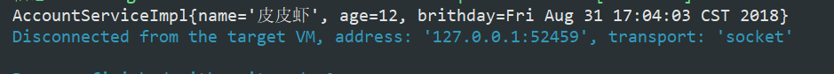
set方法注入–常用
使用的标签：property
标签出现的位置：bean标签的内部
标签中的属性：
- name：用于指定注入时所调用的set方法名称
- value：用于提供基本类型和String类型的数据
- ref：用于指定其他的bean类型数据。他指的就是在spring的Ioc核心容器中出现过的bean对象
优势：创建对象时没有明确的限制，可以直接使用默认构造函数
弊端：
如果有某个成员必须有值，则获取对象是有可能set方法没有执行。1
2
3
4
5
6
7
8
9
10
11
12
13
14
15
16
17
18
19
20
21
22
23
24
25
26
27
28
29
30
31
32
33
34
35
36
37
38
39
40public class AccountServiceImpl2 implements IAccountService{
private String name;
private Integer age;
private Date brithday;
public String getName() {
return name;
}
public void setName(String name) {
this.name = name;
}
public Integer getAge() {
return age;
}
public void setAge(Integer age) {
this.age = age;
}
public Date getBrithday() {
return brithday;
}
public void setBrithday(Date brithday) {
this.brithday = brithday;
}
public void saveAccount() {
System.out.println("AccountServiceImpl{" +
"name='" + name + '\'' +
", age=" + age +
", brithday=" + brithday +
'}');
}
}
1 | <!--利用反射创建Date对象--> |
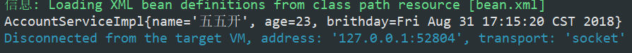
注入集合数据
用于给List结构集合注入的标签：
- list
- array
- set
用于给Map结构集合注入的标签： - map
- props
结构相同，标签可以互换
1 | <!--复杂类型的注入/集合类型的注入--> |
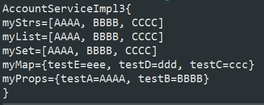